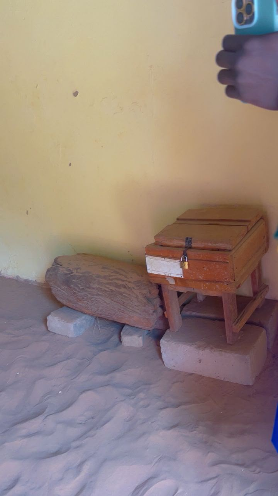
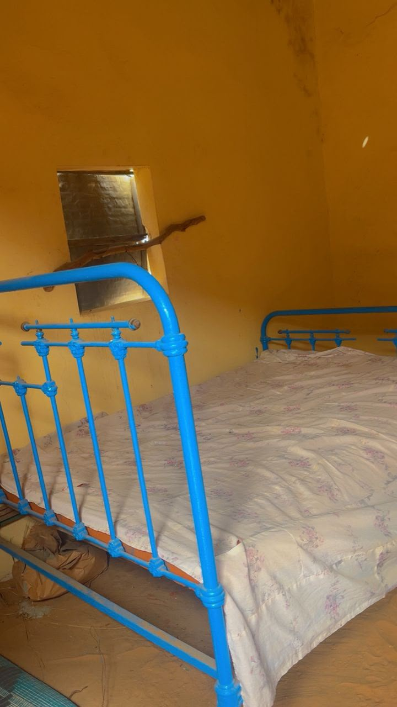

Ressources
Ressources spirituelles
Khassaïdes, sermons et publications à consulter et télécharger.
Khassaïdes
- Les khassidas en PDF Télécharger
Sermons
- JAZAOU SHAKOUR Télécharger
Publications
- MAGALU XASSIDA YI 4em editions Télécharger
Gestu recherche
Découvrez le Gestu recherche du Dahira.
La Vie et l'Œuvre de Serigne Dame Abdou Rakhmane Lo (1853-1944), Pilier de l'Enseignement Coranique dans le Mouridisme




La Vie et l'Œuvre de Serigne Dame Abdou Rakhmane Lo (1853-1944), Pilier de l'Enseignement Coranique dans le Mouridisme
Introduction
Dans l'histoire de la confrérie mouride, la figure de Cheikh Ahmadou Bamba, son fondateur, est centrale et rayonnante. Cependant, cette lumière a été portée et soutenue par une pléiade de compagnons d'une fidélité et d'un dévouement absolus. Parmi eux, Serigne Dame Abdou Rakhmane Lo occupe une place singulière et éminente. Disciple de la première heure, confident, enseignant des enfants du Cheikh et époux de deux de ses filles, il incarna la rigueur scientifique et la transmission du Livre sacré.
Notre exposé se propose de retracer le parcours exceptionnel de cet homme, depuis ses racines familiales imprégnées de savoir jusqu'à son rôle crucial dans l'édification de la voie mouride, en passant par sa formation et sa relation intime avec le Cheikh. Nous verrons comment Serigne Dame, par son humilité et son travail de titan dans l'enseignement du Coran, a contribué de manière décisive à la réalisation de la "mission grandiose" de Cheikh Ahmadou Bamba .
I - Les Origines et la Formation d'un Érudit (1853-1880 environ)
1. Naissance dans un Berceau de Savoir
Serigne Dame Abdou Rakhmane Lo est né à Méoundou, dans l'actuel département de Tivaouane, au cours du mois de Rabî al awwal 1271 de l'Hégire (correspondant à fin 1853 ou début 1854) . Il grandit dans une famille déjà réputée pour sa piété et son érudition. Son père, Serigne Mouhammad LO, et sa mère, Sokhna Mariama SECK, lui transmettent les premières valeurs islamiques, posant les fondations de ce qui allait être une vie entièrement dédiée à la foi.
2. Un Parcours Initiatique Riche et Exigeant
Dès l'âge de scolarité, son père le confie à des maîtres réputés pour parfaire son éducation, suivant le parcours classique du talibé en Afrique de l'Ouest.
· Premier maître : Il commence par apprendre et mémoriser le Saint Coran en un temps record chez Serigne Massata DIAKHATE.
· Perfectionnement : Il se rend ensuite à la célèbre université coranique de Pire pour approfondir sa connaissance du Livre et aborder les sciences islamiques.
· Études approfondies : Sa quête de savoir le mène à Nguick, auprès du grand érudit Serigne Mor Madieng Falo, où il étudie de manière intensive la grammaire arabe et la jurisprudence islamique (Fiqh) .
3. La Rencontre Décisive à l'École de Pathar
C'est à Pathar, à l'école de l'illustre Serigne Momar Anta Saly (le père de Cheikh Ahmadou Bamba), que Serigne Dame achève son parcours d'apprentissage. C'est dans ce cadre prestigieux qu'il fait une rencontre qui allait bouleverser sa vie : celle de Cheikh Ahmadou Bamba, qui y enseignait déjà sous la supervision de son père. Serigne Dame devient rapidement un collaborateur précieux du futur Cheikh, allant jusqu'à apprendre et enseigner les ouvrages que le jeune Ahmadou Bamba composait à l'époque. Cette période marque le début d'une relation indéfectible .
II - Une Fidélité Absolue au Service de la Mission du Cheikh
1. Le Premier Compagnon
À la disparition de Serigne Momar Anta Saly, la gestion de l'école de Pathar revient à Cheikh Ahmadou Bamba. Lorsque ce dernier décide d'entreprendre une tournée au Sénégal et en Mauritanie, il confie à Serigne Dame la lourde responsabilité de l'intérim à la tête de l'école. Cet acte est une preuve éclatante de la confiance qu'il lui accorde .
Quelques mois plus tard, au retour du Cheikh, ce dernier réunit ses disciples et leur annonce la révélation de sa mission divine : revivifier la Sunna du Prophète et réformer la communauté musulmane. Pour ceux qui souhaitent l'accompagner dans cette voie nouvelle, une soumission totale est requise. Serigne Dame Abdou Rakhmane Lo est parmi les tout premiers à faire allégeance (Bay'ah) au Cheikh, scellant ainsi son destin de pilier du mouridisme naissant .
2. Le Gardien du Coran, "Pierre Angulaire" du Mouridisme
Dans l'organisation de la première communauté mouride, Cheikh Ahmadou Bamba confia à ses compagnons les plus proches des missions spécifiques. À Serigne Dame, il attribua la tâche la plus fondamentale : l'enseignement du Coran. Le Cheikh considérait le Livre sacré comme la base de tout son enseignement, "son arme efficace face aux ennemis de l'Islam et à Satan". En confiant cette mission à Serigne Dame, il faisait de lui le garant de la pureté et de la transmission de cette source première de la foi .
3. L'Installation à Darou Alim et un Rôle Familial Unique
Serigne Dame suivit le Cheikh dans tous ses déplacements, de Mbacké Kajoor à Darou Salam, jusqu'au jour où Cheikh Ahmadou Bamba l'installa définitivement dans un village qui allait porter son nom : Darou Alim Al Habîr, plus connu sous le nom de Ndame. Là, il devait se consacrer exclusivement à sa mission d'enseignement .
Le lien entre les deux hommes atteint alors son paroxysme. Serigne Dame devient le précepteur des frères cadets du Cheikh, puis de ses propres enfants. La confiance et l'estime étaient telles que Cheikh Ahmadou Bamba lui donna en mariage successivement deux de ses filles : Sokhna Fatimtou, puis Sokhna Mouslimatou. Cette double alliance, rare et symbolique, fit de Serigne Dame non seulement le compagnon et le disciple, mais aussi le gendre du Cheikh, l'intégrant au cœur même de sa famille .
III - L'Homme et Son Héritage : Un Modèle de Piété
1. Le Portrait d'un Dévot
Les qualités de Serigne Dame Abdou Rakhmane Lo sont à l'image de sa relation avec son maître. Les sources le décrivent comme un homme d'une vertu exceptionnelle, d'un courage tranquille et d'un détachement total des futilités du monde (Zouhd). Il était réputé pour son assiduité dans les pratiques religieuses, passant ses journées à jeûner et ses nuits en prière et en récitation du Coran . Sa vie était une parfaite illustration de l'adage : "Dis-moi qui tu fréquentes, je te dirai qui tu es".
2. La Transmission et la Disparition du Maître
Serigne Dame a non seulement enseigné le Coran, mais il a aussi formé une génération de disciples et de fils qui ont perpétué son œuvre. Son village de Ndame est devenu un centre rayonnant de savoir islamique, un "Dâr al Alîm al Habîr" (la demeure du savant averti), supervisé par lui jusqu'à la fin de ses jours .
Il fut rappelé à Dieu au mois de Chaabane 1363 de l'Hégire (correspondant à l'année 1944) , à l'âge d'environ 91 ans. Sa disparition fut l'occasion pour de nombreux poètes et disciples de composer des élégies pour louer ses mérites et pleurer la perte de ce géant de la spiritualité .
Conclusion
Serigne Dame Abdou Rakhmane Lo incarne la figure du compagnon fidèle et du savant humble. Sa vie, entièrement dédiée au service de Cheikh Ahmadou Bamba et de sa mission, démontre que l'édification d'une voie spirituelle comme le mouridisme ne repose pas uniquement sur le fondateur, mais aussi sur la qualité, la loyauté et le travail de ses premiers disciples. En se voyant confier la mission la plus noble, l'enseignement du Coran, et en l'honorant jusqu'à son dernier souffle, il a assuré la transmission des fondements mêmes de la foi au cœur de la nouvelle communauté. Par son dévouement, sa piété et son lien familial avec le Cheikh, il reste à jamais un modèle pour tous les talibés, un maître qui a su transformer une localité, Ndame, en un phare du savoir coranique dont la lumière brille encore aujourd'hui. Que Dieu l'accueille en Son Vaste Paradis.